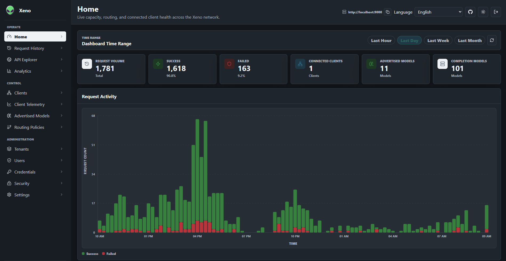
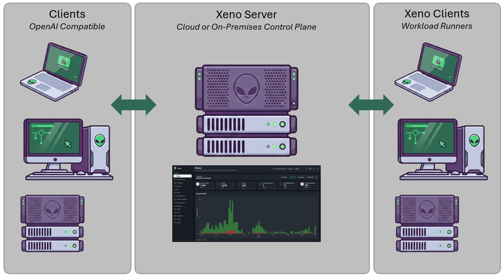
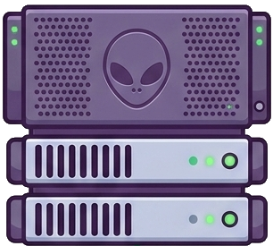
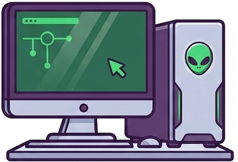

OpenAI-compatible API
Expose model listing, chat completions, completions, and embeddings behind one stable endpoint.

OpenAI-compatible AI control plane
Turn every trusted laptop, workstation, server, and accelerator host into one shared model-serving network.
Xeno gives teams a single governed endpoint for distributed inference, with routing policy, client identity, telemetry, dashboards, and SDKs built around the hardware and models they already own.
What it does
Xeno separates the public API surface from the machines doing the work. Applications call the Xeno server. Connected clients run beside local runtimes and accelerators, advertise what they can serve, execute routed requests, and report enough telemetry for operators to trust the fleet.
Expose model listing, chat completions, completions, and embeddings behind one stable endpoint.
Tenant-bound clients connect over WebSockets and advertise machine inventory, providers, and models.
Use model and client match rules with RoundRobin, Random, FirstAvailable, LeastRecentlyUsed, or Adaptive selection.
Inspect request history, headers, bodies, stream counters, routing decisions, host metrics, provider telemetry, and analytics.
How it works
The server owns identity, tenancy, routing policy, request history, telemetry, and the API. The client owns local execution against Ollama, vLLM, OpenAI, Gemini, or another OpenAI-compatible provider.

Install the lightweight xeno client on machines with reachable model runtimes or accelerator capacity.
Each client reports provider endpoints, supported models, host health, GPU details, and provider telemetry.
Applications call Xeno once. The server authenticates, checks permissions, applies policy, and selects an eligible client.
Operators inspect routing traces, selected clients, timing, token metadata, failures, and fleet utilization.
Deployment options
Xeno is designed for public-cloud coordination, private accelerator estates, and hybrid fleets that combine local model runtimes with hosted APIs.

Run a small Xeno server in cloud infrastructure, issue tenant-scoped client credentials, and connect trusted contributor machines from anywhere.

Deploy internally, install clients on GPU hosts, and give agentic applications one governed API endpoint for private capacity.
Blend local Ollama or vLLM with OpenAI, Gemini, and compatible endpoints while keeping application code stable.
Dashboards
Xeno ships with server and local client dashboards for live capacity, connected clients, advertised models, telemetry, routing policy, API exploration, request history, and tenant administration.
Developer experience
Applications use Xeno like a normal OpenAI-compatible endpoint. Operators can change routing, providers, and model placement without forcing application teams to chase machine-specific details.
curl http://localhost:9000/v1/chat/completions \
-H "Authorization: Bearer $TOKEN" \
-H "Content-Type: application/json" \
-H "x-tenant-guid: ten_default" \
-d '{
"model": "llama3.2:latest",
"messages": [
{ "role": "user", "content": "Explain an inverted index." }
],
"stream": true
}'import { XenoClient } from '@xeno-control-plane/sdk';
const client = new XenoClient({
baseUrl: 'http://localhost:9000',
bearerToken: token,
tenantId: 'ten_default'
});
const models = await client.listOpenAiModels();
const policies = await client.listRoutingPolicies();from xeno_client import XenoClient
client = XenoClient(
"http://localhost:9000",
bearer_token=token,
tenant_id="ten_default",
)
models = client.list_openai_models()
policies = client.list_routing_policies()using Xeno.Sdk;
using XenoClient client = new XenoClient(
"http://localhost:9000",
bearerToken: token,
tenantId: "ten_default");
XenoApiResponse models =
await client.ListOpenAiModelsAsync();
XenoApiResponse policies =
await client.ListRoutingPoliciesAsync();Use cases
Xeno is for teams that want placement, policy, and observability around model execution without rewriting every application.
Let trusted contributors attach home labs, offices, classrooms, and partner machines to a shared endpoint.
Give internal teams a single inference API backed by managed GPU hosts, role-based access, and audit-friendly request history.
Expose heterogeneous workstations as one pool while keeping model inventory and machine details visible to operators.
Keep execution near sensitive data or branch users while retaining central visibility and policy control.
Included surfaces
Getting started
Xeno is MIT licensed and available on GitHub. The default Docker deployment starts PostgreSQL, initializes the system, and brings up the server and dashboard for local evaluation.
git clone https://github.com/jchristn/xeno.git
cd xeno/docker
docker compose pull
docker compose up -d
# Dashboard: http://localhost:9100
# API: http://localhost:9000
# Swagger: http://localhost:9000/swagger